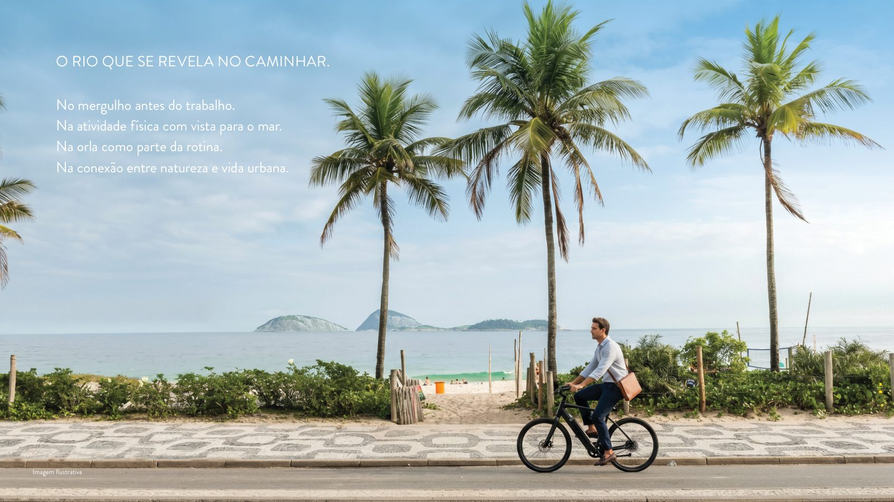

Viver Ipanema em sua forma mais autêntica. Dois lançamentos na Rua Barão de Jaguaripe (225 e 404), a poucos passos da praia.
Realização Opportunity Imobiliário · Residencial multifamiliar
O Be.in.Rio Barão de Jaguaripe nasce da leitura do modo de viver em Ipanema, reunindo arquitetura contemporânea, funcionalidade e integração com o entorno. A fachada, em tons neutros, com varandas e floreiras, estabelece uma relação natural com a arborização da rua.
São duas torres na mesma via — o 225, no charme do dia a dia entre a Garcia d'Ávila e a Visconde de Pirajá, e o 404, no encontro entre a Praia de Ipanema, a Praia do Leblon e a Lagoa. Dois pontos estratégicos, o melhor dos dois mundos de Ipanema.
Um painel em azulejos valoriza o pedestre e o ritmo da calçada, propondo um jogo de aproximação e distanciamento em que o movimento acontece no olhar. No térreo, inserções artísticas aproximam arquitetura e cidade.
Com vista livre para o cartão-postal carioca, o rooftop reúne lazer, contemplação e convivência.
Áreas privativas de 33,46 · 36,59 · 47,98 e 48,14 m² (com terraço descoberto).
Plantas de 69,89 e 70,05 m², com opção studio.
Entregue com armários/closet design, cooktop, infra para ar-split e internet.
Dados e imagens do material oficial do empreendimento, apresentados por Paulo Cotrim na condição de corretor autorizado. Imagens ilustrativas; metragens são áreas privativas conforme o book. Valores, disponibilidade de unidades e condições são confirmados na tabela oficial vigente — nada aqui é oferta ou garantia. Barão de Jaguaripe 404 é um lançamento companheiro na mesma via.